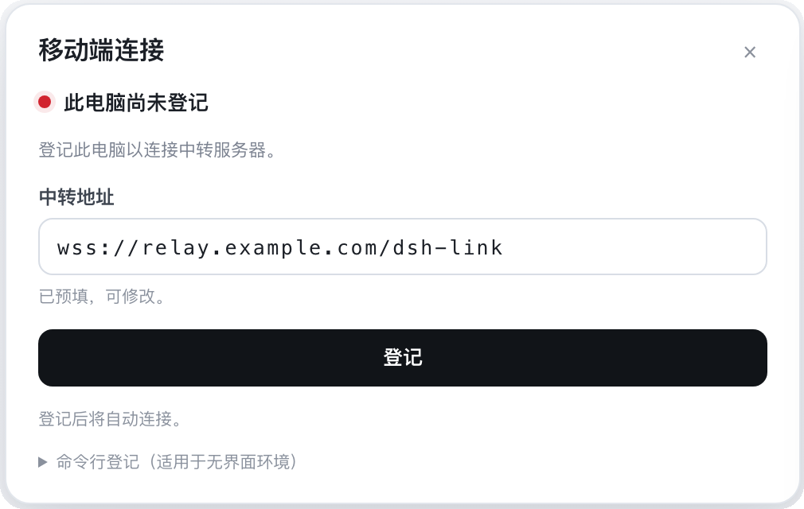

DeepSeek Harness
▢
dsh-mobile-demo
工作区里那份 export-2026-10.csv，帮我确认一下有没有重复行。
好，先读文件。
共 12,480 行，重复 36 行。
给 DSH 发消息…
DeepSeek-V4.1-Flash
↑

正在登记…
9:41
✕
扫码配对
☀
对准电脑屏幕上的二维码
地址与配对码会自动填入
✓
已识别 · relay.example.com
完成
连接 DSH
DSH Mobile
连接你电脑上的 DSH，随时查看进度、回应提问、继续会话。
已保存的连接
My Mac
relay.example.com · 中转
连接
⌫
扫码配对
中转服务器
https://relay.example.com/dsh-link
配对码
配对码
4F7K-2M9Q
在电脑端打开
/mobile-link/qr
显示二维码，或用上面的「扫码配对」扫它。
配对并连接
中转需要电脑侧连接器在线。对话经中转转发，不在服务器落盘。
已连接 · My Mac
‹
dsh-mobile-demo
已连接 · 中转
⋯
工作区里那份 export-2026-10.csv，帮我确认一下有没有重复行。
好，先读文件。
▚
bash
运行中
✓
wc -l export-2026-10.csv && head -n 2 export-2026-10.csv
✓
已完成 · 1.4s
export-2026-10.csv
12,480 行 · 重复 36 行
✓
✓
已完成 · 6.2s
给 DSH 发消息…
＋
↑
‹
工作区文件
⟳
浏览
变更
历史
⌕
搜索当前目录
dsh-mobile-demo
bin
›
src
›
test
›
chart.png
23.6 KB
›
export-2026-10.csv
59.1 MB
›
package.json
129 B
›
README.md
248 B
›
⑂
main
9 处改动
▸
仓库根目录
3
已修改
README.md
›
未跟踪
assets-dump.bin
›
已修改
notes.txt
›
▸
docs
1
已重命名
getting-started.md
原路径 docs/usage.md
›
▸
src/api
3
已删除
cache.js
›
已修改
client.js
›
未跟踪
retry.js
›
▸
src/ui
1
已修改
board.js
›
▸
test
1
已修改
board.test.js
›
⑂
main
12 次提交
a1c4f2e
修复导出重复行
My Mac · 2 小时前
›
7d9b310
过滤已读源
My Mac · 昨天
›
3f0c8aa
合并同标题条目
My Mac · 10 月 28 日
›
c92e771
初版 RSS 抓取
My Mac · 10 月 24 日
›
5b81d04
建立测试夹具
My Mac · 10 月 21 日
›
export-2026-10.csv
工作区 · 59.1 MB
0 MB / 59.1 MB
0%
✓
已下载 59.1 MB · 15.2 秒
在「文件」中打开
client.js
未暂存
src/api · +3 −2
@@ -12,7 +12,9 @@
- const rows = await fetchRows(since);
+ const rows = await fetchRows(since, { dedupe: true });
+ const unique = rows.filter(isUnique);
return rows.map(toCsv);
- // TODO: dedupe
+ return unique.map(toCsv);
只读预览
工作区 · main
01
电脑端
先在电脑上登记
点开左下角的「移动端连接」。
01
中转服务器
relay.example.com
02
配对码
8ECW-PPC5
03
二维码
手机扫码即连
DSH MOBILE · iOS
先在电脑上
登记
扫一下
就连上
会话
在手上继续
远程文件
随手取
改动
一眼看清
提交
历史
打开左下角的「移动端连接」，点一下登记。
电脑不用公网 IP，也不用装 VPN。
电脑锁屏，任务照常跑；提问在手机上答。
浏览工作区，预览任意文件，一键下载。
未提交的修改、重命名与新增，全部列出来。
每次提交改了什么，顺着记录回看。
01
扫码配对
无需公网 IP
02
会话同步
消息与工具调用
03
远程文件
浏览、预览、下载
04
改动清单
未提交的 git 状态
05
提交历史
按时间回看
DSH Mobile
把电脑上的 DSH，装进 iPhone。
iOS 17+
原生 SwiftUI
MIT
github.com/jayantTang/DSH_Mobile